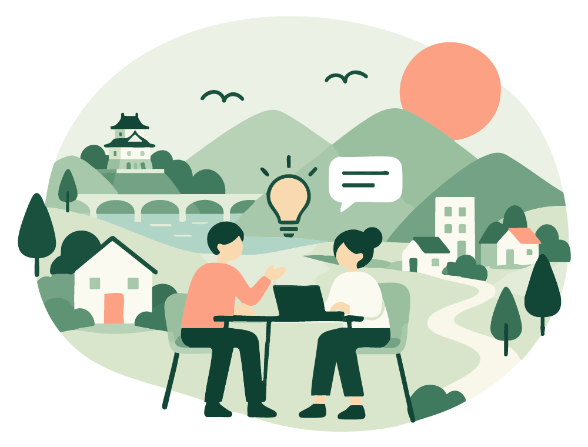
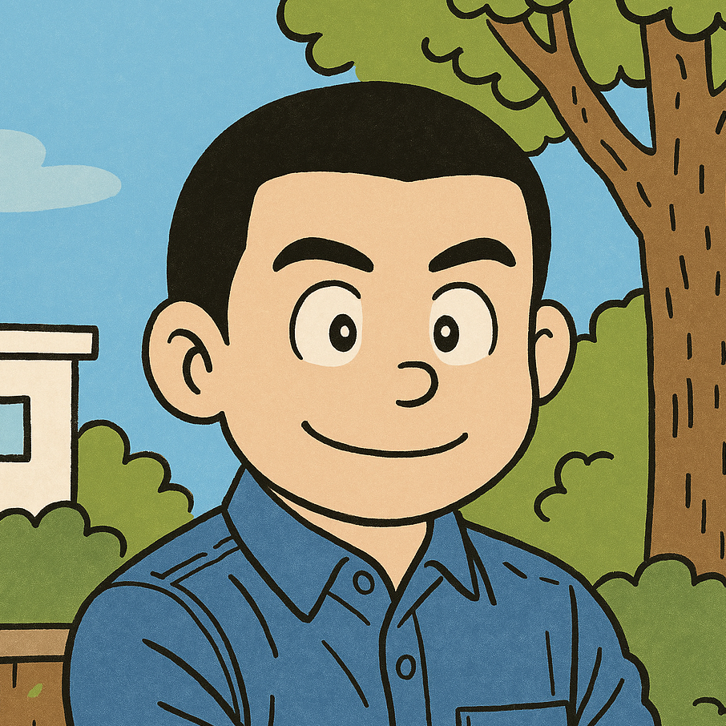
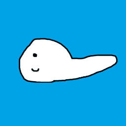
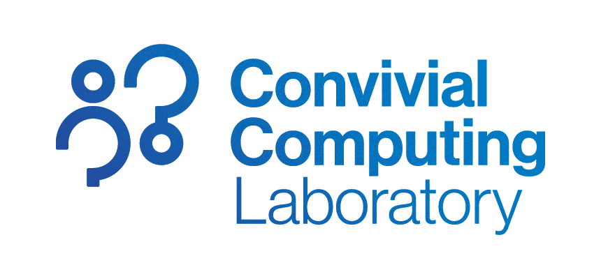
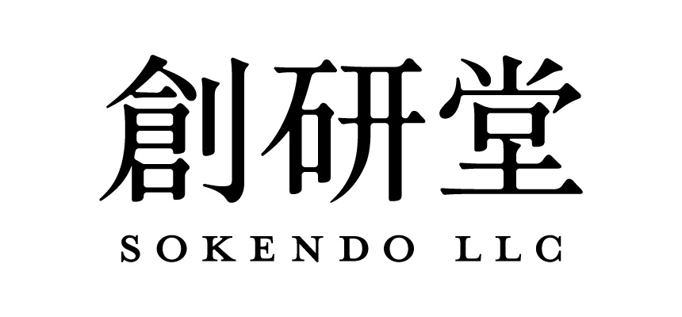

01
まず、地域の声を聞く。
日々の暮らしの「困った」や「こうなったらいいな」に耳を傾ける。当事者と一緒に、取り組む課題を見つけます。
暮らしが、出発点。THINK LOCAL. ACT TOGETHER.
「このまちを、もっとよくしたい。」
その思いを、小さな一歩に。
私たちは、岡山のために行動する仲間の集まりです。

01 / ABOUT US
地域のために、できることを持ち寄る。
そこから、変化を起こしていく。
Code for Okayama（コード・フォー・オカヤマ）は、岡山市を中心に、岡山県全域の地域課題を解決するために「行動」を起こす人たちの集まりを目指す団体です。
名前には、プログラムの「code（コード）」と、一歩を踏み出す「行動（こうどう）」を重ねています。技術を使って仕組みをつくることも、まちに出て話を聞くことも、私たちにとって大切な行動です。
情報系のエンジニアが多い集まりですが、職種や専門性は問いません。ITを使うかどうかも、課題に合わせて考えます。出発点はいつも、地域に暮らす人の声と「よくしたい」という思いです。
02 / OUR APPROACH
大きな答えより、身近な気づきから。
一緒に考え、一緒に動くための姿勢です。
日々の暮らしの「困った」や「こうなったらいいな」に耳を傾ける。当事者と一緒に、取り組む課題を見つけます。
暮らしが、出発点。コードを書く、デザインする、情報を整理する、人をつなぐ。ITも選択肢のひとつとして、課題に合った方法を探します。
技術も、アイデアも。まずは、できることから一歩。試してわかったことを持ち寄り、地域の人と一緒に、よりよい形へ育てていきます。
一歩ずつ、前へ。03 / HOW WE ACT
話すだけで終わらせず、できることを形に。
こんな進め方を目指しています。
身近な困りごとを持ち寄り、地域を歩き、話を聞く。
立場や得意の違う人と、解決の方法を一緒に考える。
小さな企画や仕組みをつくり、実際に試してみる。
結果や学びを共有し、次の行動や仲間につなげる。
POSSIBILITIES
以下は取り組みのイメージです。
実施済みの活動・プロジェクトではありません。
04 / OUR MEMBERS

Code for Okayama 事務局

メンバー紹介を準備しています。
メンバー紹介を準備しています。
メンバー紹介を準備しています。


05 / JOIN THE COMMUNITY
プログラミングができなくても、大丈夫。
地域を知っていること、話を聞けること、
「やってみたい」という気持ちも、大切な力です。
岡山に暮らす方も、岡山に関わりのある方も。職種やITの経験にかかわらず、地域のために行動したい人とつながりたいと考えています。
FAQ
はい。エンジニアに限らず、地域のために行動したい人たちの集まりを目指しています。地域の知識、デザイン、企画、対話など、さまざまな経験や得意を大切にします。
いいえ。ITを使うかどうかは限定しません。まず地域の課題を理解し、対話や場づくりも含め、解決に合った方法を考えます。
はい。岡山市を中心としながら、岡山県全域の地域課題に向き合うことを目指しています。
開催概要や参加方法は、Peatixのイベントページをご確認ください。参加についてのご質問は、code4okayama@cocolab.jpまでお問い合わせください。